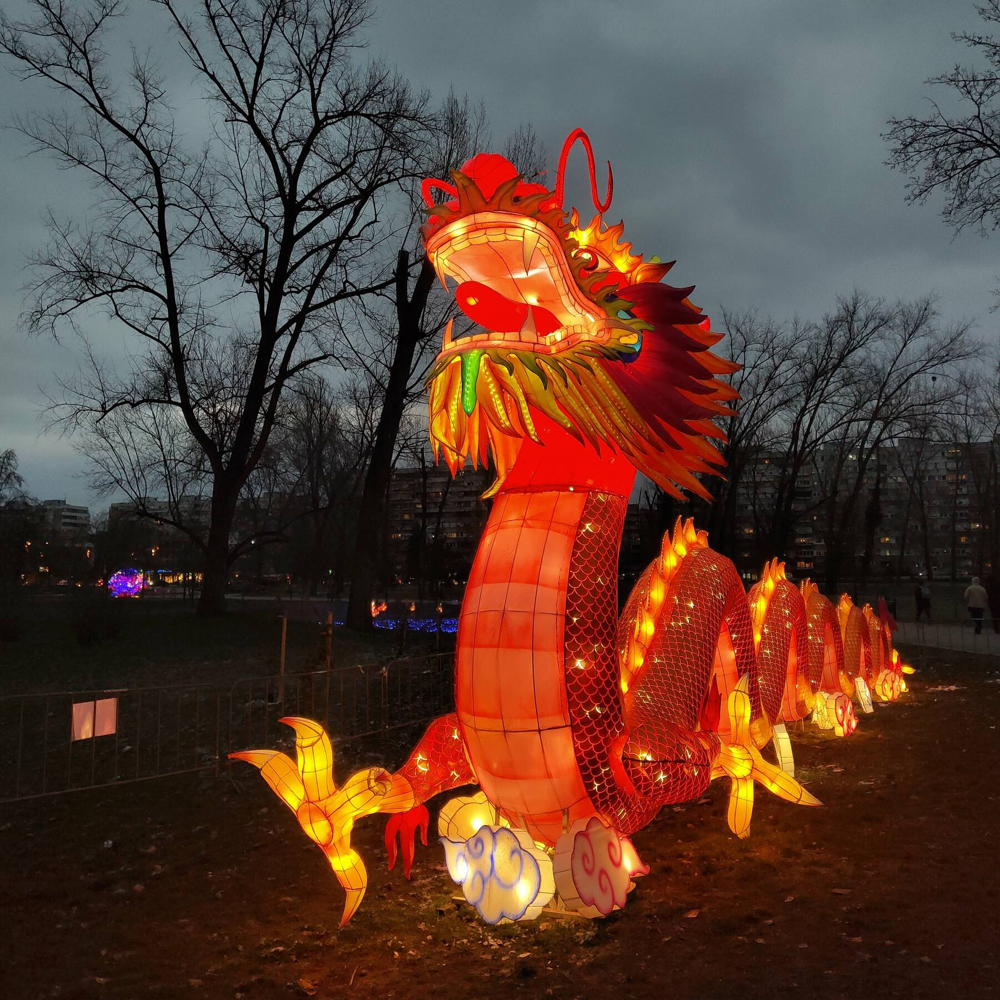
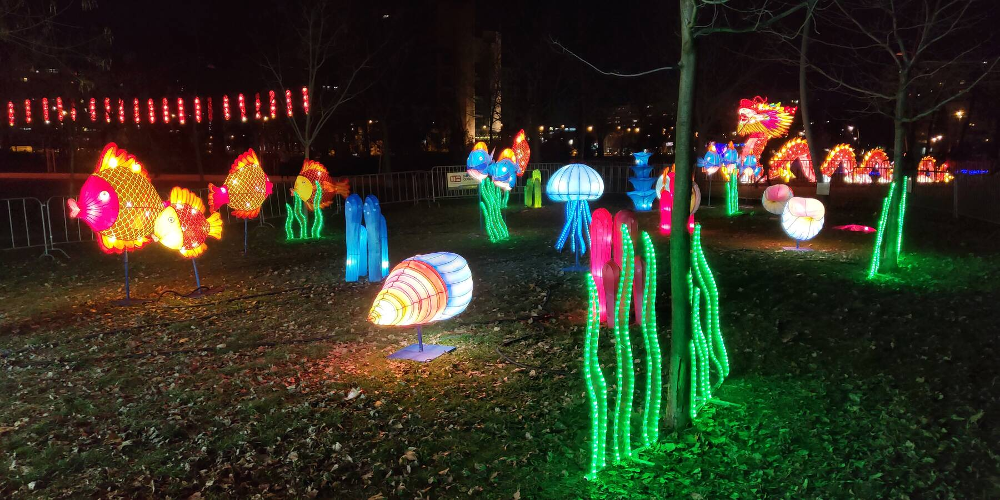
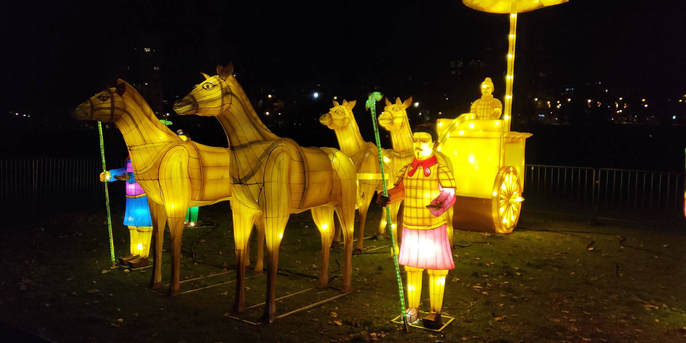
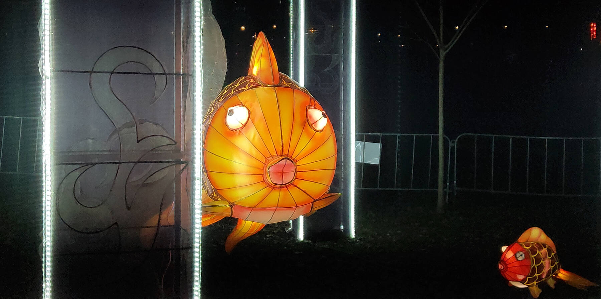
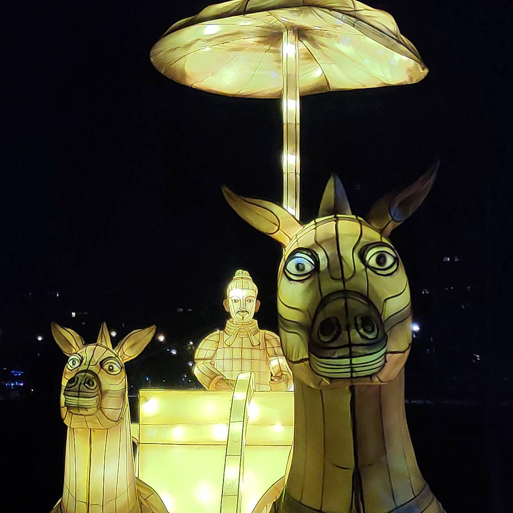

Китайский новый год в Лиманском парке
14/02/2021
Местные китайцы устроили в Лиманском парке световые инсталляции в честь своего лунного нового года. Здорово получилось!




Некоторые фигуры смотрятся особенно хорошо в фас: понимаешь, что ты всё-таки не самый глупый на этом свете.


А больше всего мне понравились вот эти фонарики. Атмосферная штука.